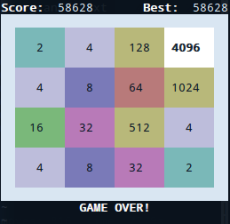

About me
The talk
2048
The plan
Minimax
The gears
My code
Does it work?
To improve
Conclusions
Thank you
Perl (CPAN) vs 2048
- Marc Egea i Sala (github.com/meis)
- @m_e_i_s
- Barcelona.pm
Granada Perl Workshop'14
(NO SPOILERS)
Available:
- A different talk: writing code to play (and win) 2048
- I don't give talks about topics I master
- Talk driven learning
- Started to code 4 days before the workshop
- by Gabriele Cirulli > 1024 > Threes
- Famous
- Adictive
- Random (but not so much)
- No time to code!!
- Need a prototype fast
- Dive into Stack Overflow
- Minimax, sounds familiar
- Decision Algorithm (von Neumann 1926)
- Minimize loose
- Tree with all possible boards
- Evaluation function for each board

Using in 2048
- Any possible moves
- Deep limit
- Evaluation function
CPAN for the Win!
Game logic
- Games::2048, by Blaise Roth
- Only keyboard input
- Can plug a bot (in 20 hours!!)
- Just extend the class
Minimax
- Games::AlphaBeta, by Stig Brautaset
- Minimax with alpha-beta pruning
Available in:
AlphaBeta::Position
- findmoves
- apply
- evaluate (mostly stolen)
DID IT WORK???
Yes!
(Mi current record is 58.7k)
Well, sometimes...

Depending on deep
- 1 level: Fast loosing (< 1m games)
- 2 levels: Not so fast loosing
- 3 levels: Winning in half an hour
- 4 levels: Sometimes win in 2 hours
- 5 levels: Life's too short
Conclusions
- Bad performance
- Not the best approach
- Prototype: CPAN + Glue
- Someone probably did it before
- Prototype first, optimize later
- Prepare the subject before the talk proposal